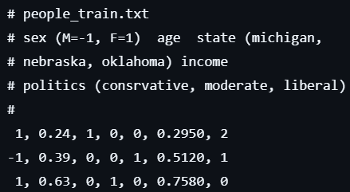
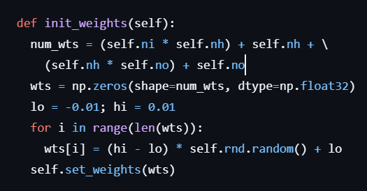
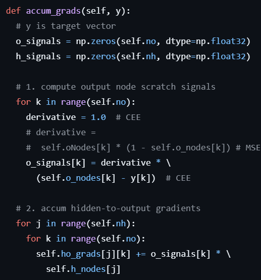
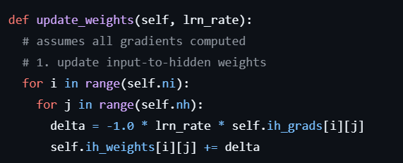

Introduction: The Gameplan
I think the most important part about understanding a neural network classifier is knowing the overarching steps, but with that comes knowing the math at each of these steps. This is especially important so that you know what to change (higher, lower, less harsh, more harsh) when something isn't working like it should. In this blog, we'll go through all the math skimmed over in this post, so that when put together you have all parts of a true classifier, all built from scratch.
To follow along, know that all code discussed today can be found here.
All the computation can be broadly divided into three distinct steps. First, there's dataset conversions, forward computation, and backpropagation. Let's look at these one at a time.
1: Dataset conversions
This actually doesn't even happen in the script. It's the manual process of taking your data in whatever form it has, and converting it to values the model can read. This list is pretty short, starting and ending at 'numbers'. So, data that exists in text or pictures-- anything that isn't pure real numbers, needs to be looked at and changed. Luckily, there are other packages out there that will do the conversions for you. Unluckily, here we did it all on our own.
Through this project, I learnt three overarching rules about finalizing how your data looks.
One, make sure they are distinguishable. Say the data are the diameter of a neuron. The corresponding values are likely extremely small. To the model, there is a difference, but to an onlooker, the sizes seem the same. It might help to multiply these values by a scalar coefficient. This is especially important if other data in your set have much bigger ranges, like metric tons.
Two, categorize wisely. It isn't helpful to have zeroes in your dataset-- mathematically algorithms really can't do anything with a zero. So if the textual categories are 'man' and 'woman', turn their numerical categories to be -1 and 1, not 0 and 1. This might not be applicable to all types of data, but I think avoiding a 0 gets the benefit of the doubt.
Three, normalize!! This is a little counterintuitive to point one, but if the data has a super wide range, normalizing can help keep them within bounds, giving equal importance to each value based on their deviation from the mean.

For this program, I looked at age, sex, income, and state to predict political alignment. Age was normalized to 100, so someone who was 31 had an input of 0.31. Sex was -1 (male) and 1 (female), income was normalized to the average income, and state was divided into three inputs where each input was a state. Here's where a 0 was important: if a person was from Michigan, the Michigan input was a '1', but the Nebraska and Oklahoma input were 0s because, well, they weren't from those states.
Once the data has been properly processed, the math involved in the network needs to be changed.
2: Forward Computation
To turn the given input into a predictive output, data flows through a series of nodes and weights. As much as I'd love if these weights and nodes were magic, each part is actually simply math. Forward computation includes these layers of nodes connected by weights, before one final computation at the end. At the start of training, weights are randomly assigned.

Now, each input is multiplied by the weight attached to it, modified by a linear bias, before being dumped into the hidden node it's connected to. We can look at all our inputs as a vector, being multiplied by a matrix and summed with a bias vector that leads to a third vector (the hidden layer).
After the inputs are filled with features, they are multiplied by an arbitrary weight assigned. The product is moved to the next layer, where they are summed and non-linearly modified, before being multiplied by the next set of weights. On and on, until the last (output) layer has nodes filled with values.
Wait. A key part to any model is that they aren't linear. This was, for all intents and purposes, a linear transformation. So before these values are declared 'correct', a non-linear transformation is applied. There are a couple options, but for this code, I went ahead with tanh(). np.tanh() converts a value to a value ranging between -1 and 1, with the mean being 0. A value that is positive and large will lay close to 1, and large and negative around -1. A value that is close to 0 will be converted to 0. This is how non-linearity is included at the hidden layers.
The process of np.tanh((weight * input) + bias) is repeated for how many ever nodes and layers a model has. At one point, it reaches the output nodes. While tanh() might be a perfectly fine non-linearity to use, we have some more options here. We could use a sigmoid, or one of the many forms of a relu, or a softmax. Understanding each of these takes some time, so we'll go into what I used: a softmax(). Unlike tanh(), a softmax() limits the sum of all the outputs to 1, and adjusts output values accordingly. So higher raw values will have high transformed values, with lower raw values having lower transformed ones.
After all of that, we finally have an output. Since this is a classifier, the 'output' ends up being whichever node has the highest activation.
3: Backpropagation & Gradient Descent
The model spits out an output. There is a high chance this classification wasn't right. So, how do we make it right? This is where the 'learning' starts, first through a loss comparison.

First, the true output is compared to the given outputs, and a loss is calculated. This is simply how different the two values are. Then, the model looks at the weights connected to these nodes, and how much each weight influenced the output node. So if weight w_2 contributed largely to output node o_2, it is extremely responsible for the error l_2 for o_2.
The loss is then calculated in the hidden nodes, before moving further backwards to check the hidden weights in the same way. It isn't possible to calculate loss for the input nodes, since the input node values are decided by the dataset. So after all weights and hidden nodes are checked, the weights are essentially 'tuned' to be more fitting.
One note is that this doesn't happen after every training input. We get to set a batch size, and as each input is processed, the error is added to a running total. So total error is allowed to fluctuate, allowing for a more accurate picture of how much one weight influences the output's error.
The last step to backpropagation is making a final forward pass, where these weights are adjusted. This is done through 'update_weights()'.

Weight updates start at the top, so the input to hidden weights first. There are two steps: first, calculating a 'delta' value, which is how much the weight needs to change.
The computed 'delta' is calculated with previous knowledge of how much each weight influenced the final output (calculated during backpropagation), multiplied by a learning rate (since we don't want to jump too far, a learning rate usually is set to 0.01 or 0.1, allowing for small steps), multiplied by -1. This -1 is used because simply using the values we got would actually increase the error. Negating it allows us to find local minima, not maxima.
The delta value is then added to the existing weights, slightly adjusting them for the next iteration.
Putting it all together: Clean data, Compute output, Calculate loss, Change weights
Armed with the knowledge of how the math works, and already having learnt the overarching steps of a classifier means that next time, we hopefully won't have to write it all out again. That's why packages like torch exist, and what the next discussion will be about.